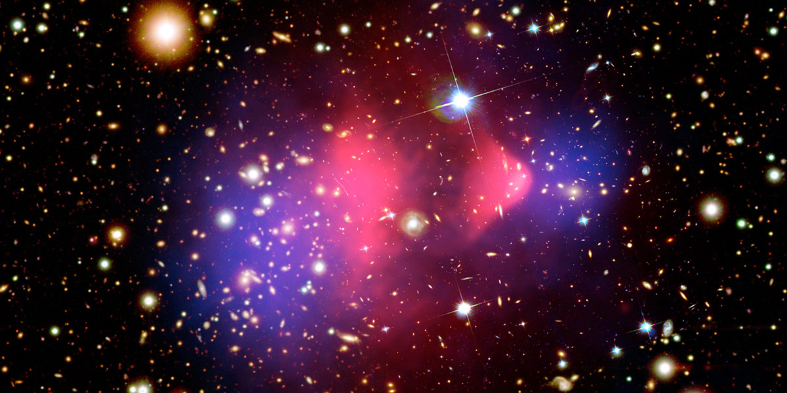
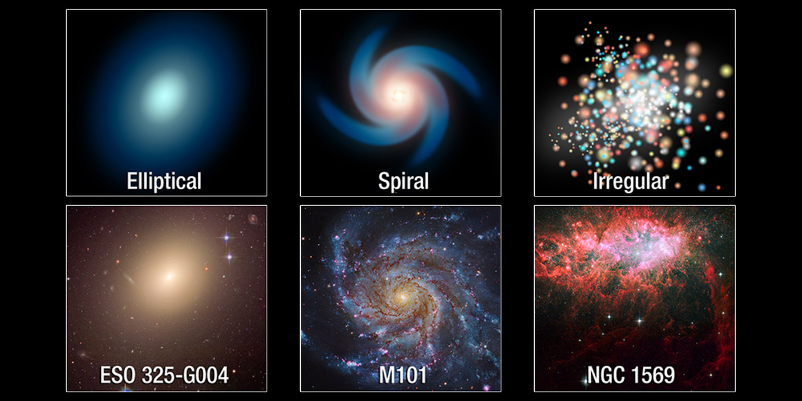
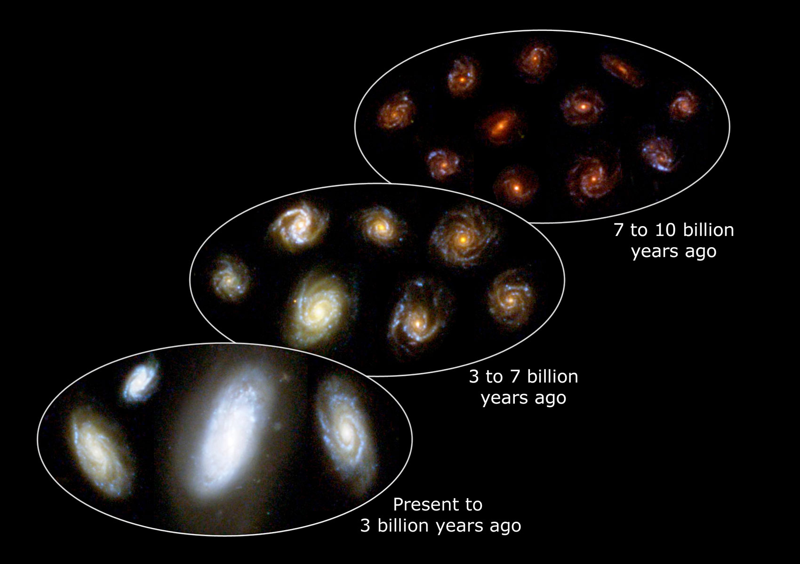

Galaxies are vast cosmic islands of stars, gas, dust, and dark matter held together by gravity. Hubble’s keen eye has revealed intricate details of the shapes, structures, and histories of galaxies — whether alone, as part of small groups, or within immense clusters. From supermassive black holes at galactic centers to giant bursts of star formation to titanic collisions between galaxies, these discoveries allow astronomers to probe the current properties of galaxies as well as examine how they formed and developed over time.

WHAT IS GALAXY?
Galaxies are concentrations of stars, gas, dust, and dark matter. They come in a variety of shapes and sizes. Some are fated to collide, like the Milky Way and Andromeda.
TYPES OF GALAXY
What Kinds of Galaxies Are There?
Astronomers classify galaxies into three major categories: elliptical, spiral and irregular. These galaxies span a wide range of sizes, from dwarf galaxies containing as few as 100 million stars to giant galaxies with more than a trillion stars.
Ellipticals, which account for about one-third of galaxies observed, vary from nearly circular to very elongated. They possess comparatively little gas and dust, contain older stars and are not actively forming stars anymore. The largest and rarest of these, called giant ellipticals, are about 300,000 light-years across. Astronomers theorize that these are formed by the mergers of smaller galaxies. Much more common are dwarf ellipticals, which are only a few thousand light-years wide.
Spiral galaxies appear as flat, blue-white disks of stars, gas and dust with yellowish bulges in their centers. These galaxies are divided into two groups: normal spirals and barred spirals. In barred spirals, the bar of stars runs through the central bulge. The arms of barred spirals usually start at the end of the bar instead of from the bulge. Spirals are actively forming stars and comprise a large fraction of all the galaxies in the local universe.
Irregular galaxies, which have very little dust, are neither disk-like nor elliptical. Astronomers often see irregular galaxies as they peer deeply into the universe, which is equivalent to looking back in time. These galaxies are abundant in the early universe, before spirals and ellipticals developed.
Aside from these three classic categories, astronomers have also identified many unusually shaped galaxies that seem to be in a transitory phase of galactic development. These include those in the process of colliding or interacting, and those with active nuclei ejecting jets of gas.

Dark Matter
What Is Dark Matter?
In the late 1970s, astronomer Vera Rubin made the surprising discovery of dark matter. She was studying how galaxies spin when she realized the vast spiral Andromeda Galaxy seemed to be rotating strangely. In an apparent violation of Newton and Kepler’s Laws, the material at the galaxy’s edges was moving just as fast as the material near the center, even though most of the mass she could see was concentrated at the center. Some extra non-visible mass, dubbed dark matter, appeared to be holding the galaxy together. She soon discovered that a huge halo of dark matter was present in galaxy after galaxy that she examined.
Nearly half a century later, scientists still don’t know what dark matter is. They do know, however, that dark matter comprises some 84 percent of the universe’s material. Its invisible and ubiquitous presence affects how stars move within galaxies, how galaxies tug on each other and how matter clumped together in the early universe.
Some of the best evidence for the existence of dark matter comes from galaxy cluster 1E 0657-556, also known as the Bullet Cluster. This cluster was formed after the collision of two large clusters of galaxies, one of the most energetic events known in the universe since the big bang. Because the major components of the cluster pair — stars, gas and the apparent dark matter — behave differently during collision, scientists were able to study them separately.
Some of the best evidence for the existence of dark matter comes from galaxy cluster 1E 0657-556, also known as the Bullet Cluster. This cluster was formed after the collision of two large clusters of galaxies, one of the most energetic events known in the universe since the big bang. Because the major components of the cluster pair — stars, gas and the apparent dark matter — behave differently during collision, scientists were able to study them separately.
The galaxies’ stars, which the Hubble and Magellan telescopes observed in visible light, were mostly unaffected by the collision, and passed right through. The hot gas from the two colliding clusters, seen in X-ray wavelengths by the Chandra X-ray Observatory, contains most of the cluster pair’s normal matter. Because the gases interact electromagnetically, the gases of both clusters slowed down much more than the stars. The third element in this collision, the dark matter, was detected indirectly by the gravitational lensing of background objects.
The dark matter by definition does not emit, reflect, or refract any type of light — it’s dark! So during the collision, the dark matter clumps from the two clusters move ahead of the hot gas (most of the normal matter), producing a separation of dark matter and normal matter. Gravitational lensing distorts light more significantly around objects with larger masses. If hot gas were the most massive component in the clusters, such an effect would not be seen. Instead, these observations show that dark matter — something that we can’t see but that must have mass to have such a strong gravitational effect — must exist.
Galaxy Collisions
Can Galaxies Collide?
While the distances between galaxies seem large, so too are galaxies’ diameters. Compared to stars, galaxies are relatively close to one another. They interact and even collide. When galaxies collide, they pass through each other; their stars don’t crash into each other because of the immense distances between them. However, gravitational interactions between colliding galaxies could create new waves of star formation, supernovas and even black holes. Collisions do distort a galaxy’s shape and computer models show that collisions between spiral galaxies can eventually make ellipticals.
Several billion years from now, our own Milky Way galaxy is destined for a collision with the neighboring spiral Andromeda galaxy. The Sun will likely be flung into a new region of our galaxy, but our Earth and solar system are in no danger of being destroyed. Andromeda, also known as M31, is now 2.5 million light-years away, but it is inexorably falling toward the Milky Way under the mutual pull of gravity between the two galaxies and the invisible dark matter that surrounds them both.
Computer simulations derived from Hubble data show that it will take an additional two billion years or more after the encounter for the interacting galaxies to completely merge under the tug of gravity. They will reshape into a single elliptical galaxy similar to the kind commonly seen in the local universe. Simulations show that our solar system will probably be tossed much farther from the galactic core than it is today.
To make matters more complicated, the third largest galaxy in the Local Group, the Triangulum galaxy or M33, will join in the collision and perhaps later merge with the Andromeda/Milky Way pair. There is a small chance that M33 will hit the Milky Way first.

Galaxy Formation
How do Galaxies Form?
The appearance and make-up of galaxies are shaped over billions of years by interactions with groups of stars and other galaxies. While we don't know for certain how galaxies formed and took the many shapes that we presently see, we have some ideas about their origins and evolution. Using supercomputers, scientists can look back in time and simulate how a galaxy may have formed in the early universe and grown into what we see today.
Astronomer Edwin Hubble’s observations led to the idea that the universe is expanding. Scientists estimate the age of the universe at 13.8 billion years based on the rate of expansion. Because the deeper you look into space, the further you see back in time, we can conclude that galaxies several billions of light-years away formed fairly soon after the big bang. While most galaxies formed early, data indicates that some galaxies have formed within the past few billion years — relatively recently in cosmic terms.
The early universe was filled mainly with hydrogen, helium, and dark matter, with some areas slightly denser than others. These dense areas eventually collapsed, allowing the hydrogen and helium to accumulate in clumps of dark matter swirling through space and the first stars and galaxies to form. While Hubble is unable to see the very first galaxies, it can track the development of galaxies over much of cosmic time.
